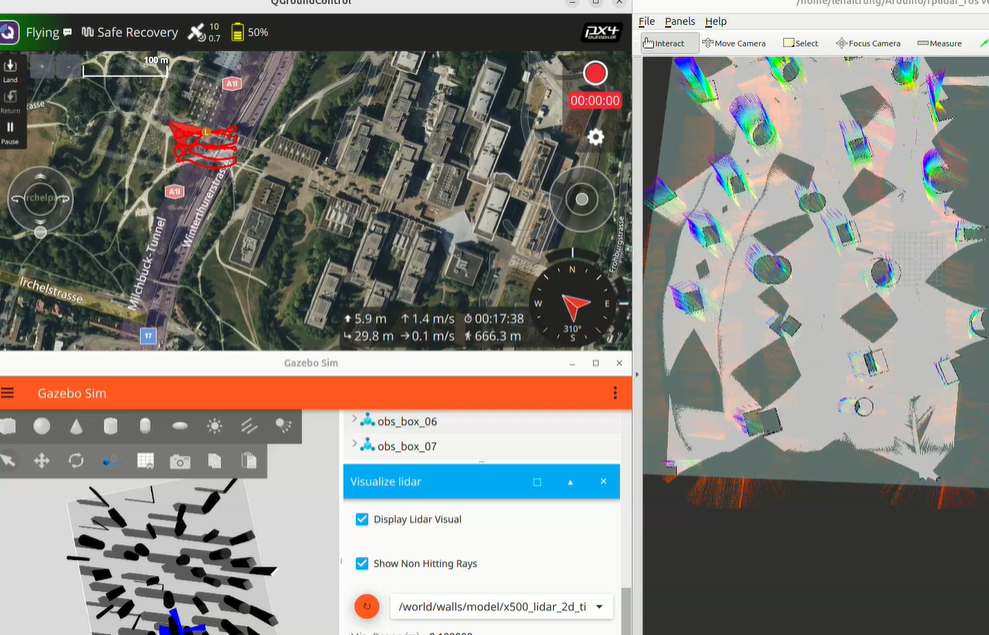
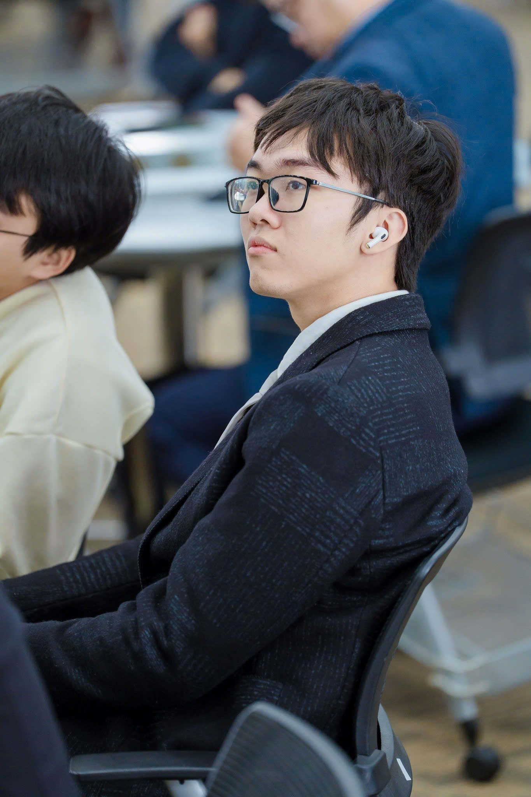

UAV / Robotics
Autonomous PX4 Drone with LiDAR and VIO
An autonomous UAV platform integrating PX4, LiDAR, and visual-inertial odometry for obstacle avoidance, environmental data collection, and mapping.
Mechatronics • Robotics • Soft Robotics • UAV
I work on robotics systems that combine hardware, control, sensing, and research-driven design. My projects span PX4-based UAVs, LiDAR/VIO integration, mapping and obstacle avoidance, as well as soft robotic hands and rehabilitation devices.

About
I am a mechatronics and robotics-focused engineer interested in building systems that combine sensing, actuation, control, and real-world deployment. My work sits at the intersection of autonomous UAVs, soft robotic mechanisms, and human-centered robotic design.
I enjoy translating research ideas into working prototypes, especially in projects that require a mix of mechanical design, embedded integration, system-level thinking, and experimental validation.
Projects

UAV / Robotics
An autonomous UAV platform integrating PX4, LiDAR, and visual-inertial odometry for obstacle avoidance, environmental data collection, and mapping.


Research / Soft Robotics
A post-stroke hand rehabilitation glove providing bidirectional finger assistance through a hybrid tendon-hydraulic soft robotic design. This work emphasizes device concept, testing, and communication through figures, text, and video documentation.

Research / Humanoid Robotics
A tendon-driven humanoid robotic hand integrating servo-controlled soft muscle actuators and a soft filament sensor for teleoperation. The project focuses on mechanism design, sensing integration, and experimental robotic interaction.
Experience
Worked across UAV autonomy, sensing integration, rehabilitation robotics, and robotic hand mechanisms. Contributed to hardware build, system design, testing, documentation, and technical presentation.
Developed research prototypes involving tendon-hydraulic actuation, soft muscle integration, sensor-assisted teleoperation, and assistive robotic devices, with strong emphasis on communication through media and technical writing.
Research
Later, you can replace this with formal citations, conference posters, thesis work, or links to PDFs, videos, and datasets.
View Resume / CVContact
I am open to research collaboration, lab opportunities, and conversations about robotics, autonomous systems, and soft robotic design.